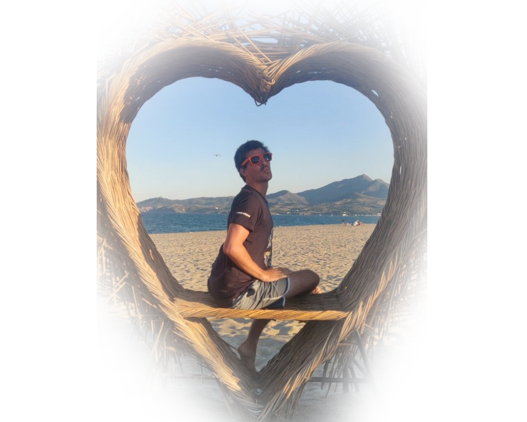
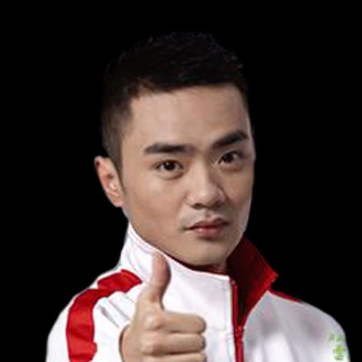
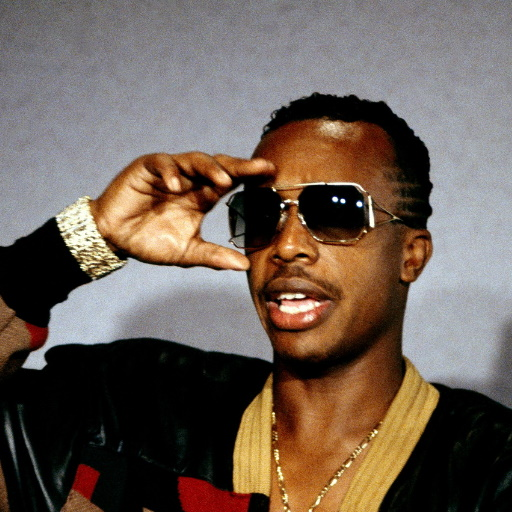
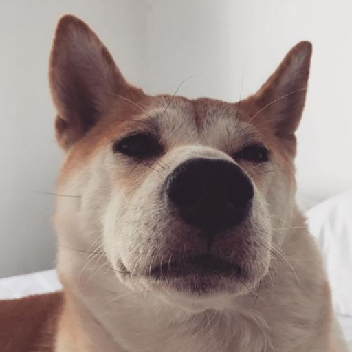

Hugo Retires
Hugo "Hugo" Hugo will be stepping down as an active player for Pour le Saucisson' Dota 2 team, and will be taking up the role of retraité. Read more for the full release.
Read MoreHugo "Hugo" Hugo will be stepping down as an active player for Pour le Saucisson' Dota 2 team, and will be taking up the role of retraité. Read more for the full release.
Read MoreHUGO ANNOUNCES HIS 7TH RETIREMENT FROM DOTA 2
PARIS, France — November 29, 2020 — Pour le Saucisson (PLS!), an occitanie-leading pro gaming team, is announcing today that Hugo 'Hugo' Fouques, the cornerstone of Pour le Saucisson' Dota and Dota 2 rosters for the better part of a decade, is set to officially retire as a player, effective immediately.
Citing boring reasons, Hugo has chosen to transition out of the demanding lifestyle required of a non-professional gamer. We are thrilled to announce, however, that Hugo will remain a part of the PLS family as the brand's Dota 2 saucisson tester in order to ensure the continued success of the team, with the new roster slated to be announced soon.
Hugo's legacy in the Occitanie esports community is incalculable. He was a key factor in PLS's third place at FroggedTV League season 4 and helped bring a level of professionalism and work ethic that impacted a generation of players. Hugo is not only recognized as an esports role model in Occitanie; he is admired for being one of the greatest charcuterie eater the world has yet encountered.
We're grateful for Hugo's many years of involvement with Pour le Saucisson and look forward to his new role as the team's saucisson tester. We hope many fans will join us in honoring not just his legacy with PLS, but his impact on esports as a whole for many years to come.
From Hugo Himself
Today, I'm announcing my 7th retirement from competitive Dota. I have been living my dream of being a non-professional gamer for over a decade now, and in that time I've retired 6 times already. Now, I have to pursue a new goal - retiring once again. I still have a passion for Dota and for charcuterie, but the long term health of my belly has to come first. Thank you all for your support.
As a professional retiree, Hugo has always been an inspiration. Even tho I started this trend, I have to admit the student has become the master and his ground breaking record of 7 retirements in a row will be a tough one to beat.
Hugo is a god to me. I have wet dreams about him at night and his strong determination to throw games under the T4 has made me harder than I care to admit.
As Hugo's manager, seeing stepping away from non-professional Dota is a relief. He will have more time dedicated to glandouille which will directly increase the amount of gratouilles I receive. He will also be more dedicated to work which should increase the quality of croquette I receive in a near future.